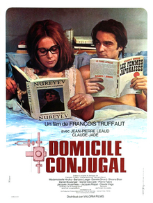

François Truffaut
1970
100 minutes
This is another of Truffaut's Antoine Doinel series, the fourth in a total of five. All of these use the same actor playing the same character over about two decades. By now we've watched Antoine grow up, or at least age, and in this one he is married. But, as usual, he's ready to make stupid mistakes and have misadventures doing that as well. He's already proven himself to have his head turned very easily by a pretty girl, no matter how inappropriate the circumstances, and this film will be no exception.
Antoine, who has graduated from being a bad TV repairman to being a bad flower shop employee, is now happily married at least for the moment to the woman from the previous film. He ends up faking being able to speak English and getting hired to demonstrate model boats for a company. He and his wife have a son and argue about whether to give him a name that's more posh or more provincial.
Shortly after that he goes to work and gets his head turned by a pretty woman, this time a Japanese woman named Kyoko who is the daughter of a client. They have a flirtatious romance and she sends flowers to his house, which he is dumb enough to try to pass off as flowers that he bought for his wife. This ruse briefly works until she finds the love notes Kyoko wrote to Antoine concealed inside the flowers. His furious wife tosses him out and he's left no choice but to move in with Kyoko, whom he quickly discovers he has very little in common with.
The scene where his wife confronts him is extra-cringey since she wears yellow-face and dresses in a kimono to do so. It's iconic, but the less said about that the better nowadays.
Eventually Antoine gets frustrated and bored with Kyoko and hits the brothel, where he uncomfortably runs into his wife's father, who shrugs it off as an ordinary part of married life. Eventually Kyoko dumps him and he goes back to his wife and child and lives happily ever after, or at least for the next eight years.
The one thing you learned as a child from your parents' less-than-exemplary marriage is that only a true idiot expects to get away with cheating on his spouse or girlfriend. Your mother taught you that between what she called women's intuition and men's natural sloppiness the wife usually can figure out something is going on. And even if the man is being careful, the Other Woman almost never has the same devotion to keeping affairs a secret as the man does. As soon as they get mad or jealous, they have an easy button to press to cause problems for the man who isn't paying enough attention to them. And they're more than happy to press it. And if they don't, they're usually surrounded by other busybodies who are more than happy to interfere just to watch the fireworks. And even if everything else holds up, the guilt will get to you if you're not a complete sociopath. Don't cheat on anyone you're not willing to watch cry in front of you or risk having them throw a pot at your head or other drama. It won't be worth it.
Time to choose something different: